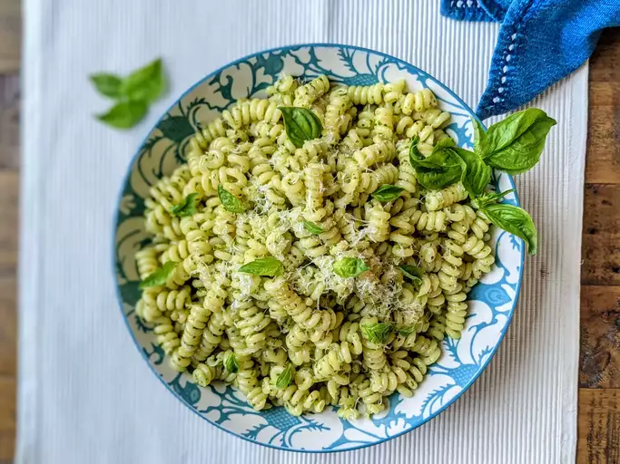

Pesto Pasta
Description
Pesto Pasta is a vibrant and flavorful Italian dish featuring al dente pasta tossed with a fresh, aromatic basil pesto sauce made from basil leaves, pine nuts, garlic, Parmesan cheese, and olive oil. It's a simple yet delicious meal that's perfect for lunch or dinner, bursting with herbaceous and nutty flavors that pair wonderfully with fresh tomatoes, grilled chicken, or seafood.
Ingredients
- 1 (16 ounce) package pasta
- 2 tablespoons olive oil
- ½ cup chopped onion
- 2 ½ tablespoons pesto
- salt to taste
- ground black pepper to taste
- 2 tablespoons grated Parmesan cheese
Step-By-Step
- Fill a large pot with lightly salted water and bring to a rolling boil. Stir in pasta and return to a boil. Cook pasta uncovered, stirring occasionally, until tender yet firm to the bite, about 8 to 10 minutes. Drain and transfer into a large bowl.
- Meanwhile, heat oil in a frying pan over medium-low heat. Add onion; cook and stir until softened, about 3 minutes. Stir in pesto, salt, and pepper until warmed through.
- Add pesto mixture to hot pasta; stir in grated cheese and toss well to coat.